结构化切片，短编号也能精确命中
切片时写入文档名、章节、条款号、页码 / Sheet，HR-01-001、IT-03-001
这类短编号走精确召回通道，不会被向量语义稀释；表格展开为含 Sheet、表头与行号的可检索文本。
企业制度问答的真实难点是：条款编号很短、表格很多、证据常跨文档、不同企业的数据必须隔离、 效果还得能量化。下面四项是这套系统相对普通 RAG Demo 的主要差别。
切片时写入文档名、章节、条款号、页码 / Sheet，HR-01-001、IT-03-001
这类短编号走精确召回通道，不会被向量语义稀释；表格展开为含 Sheet、表头与行号的可检索文本。
提问时上传的附件只属于当前账号、当前会话，不进入企业正式知识库。切片存在关系库而非向量库， 召回走字词重叠打分（条款号加权、中文 2/3-gram），命中不到时退化为注入附件摘要。
知识库来源与附件来源分区注入 Prompt，两者冲突时并列说明差异，不合并成确定结论。
DeepSeek 与 SiliconFlow Key 按企业加密保存、遮罩展示、支持连接测试。检索与删除始终带
enterprise_id + kb_id 过滤；普通企业缺 Key 时明确报错，不回退平台 Key。
A–F 六类题型覆盖单文档事实、细节定位、跨文档推理、场景计算、边界判断与幻觉测试。 支持 retrieval / full 两种模式、逐题失败诊断和 Markdown 报告下载。
从登录、问答、附件理解，到知识库治理、模型配置、企业治理与评测中心，均为真实系统界面。
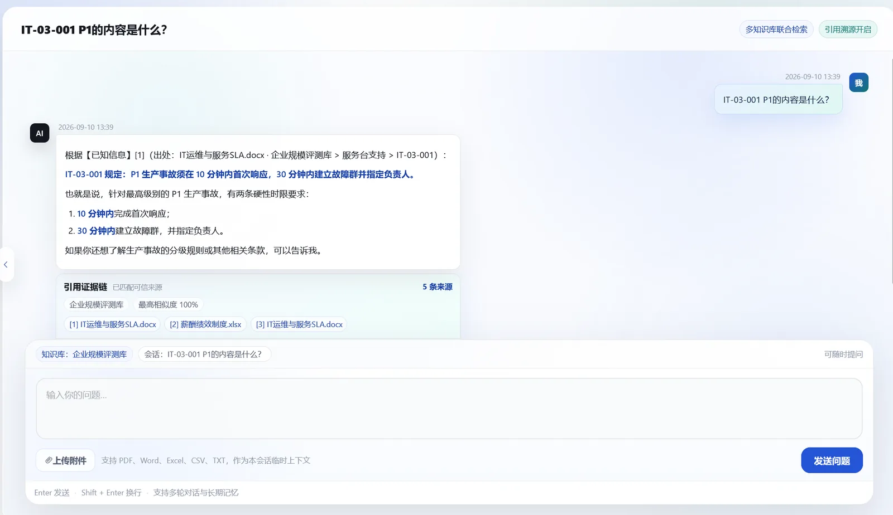
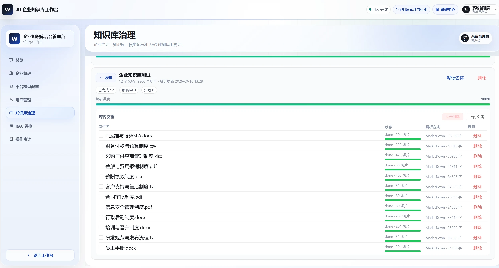
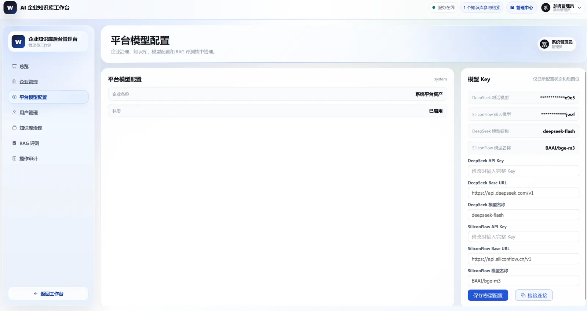
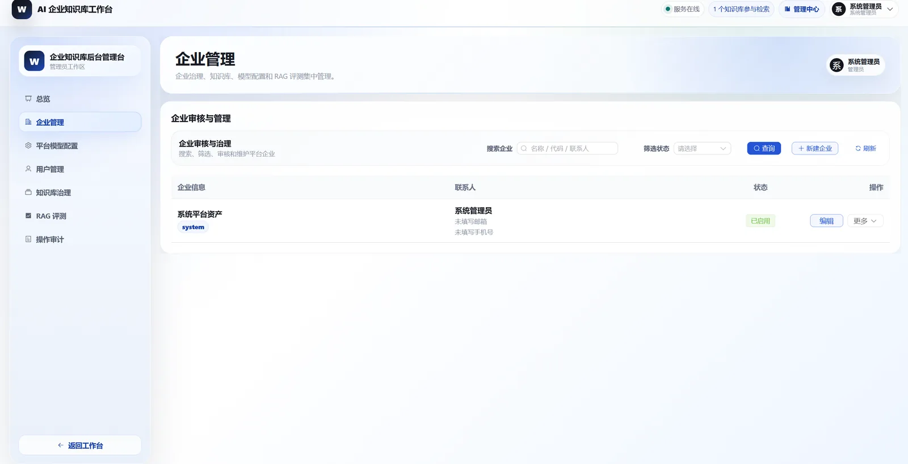
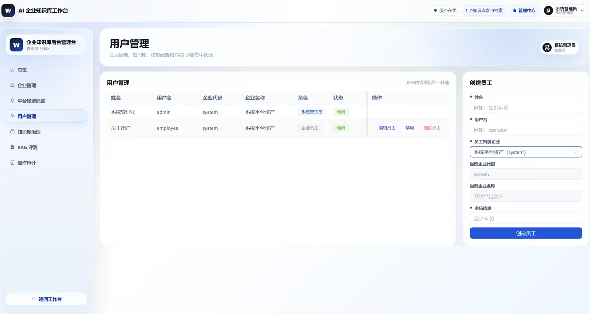
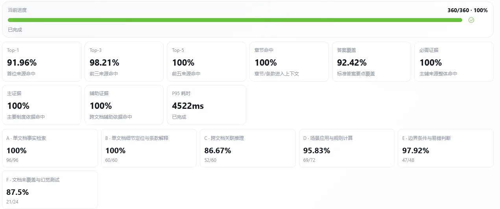
制度类问答的准确率不来自模型参数，而是拆在解析、切片、改写、召回、重排、生成六个环节里。 下面每一阶段都写清三件事：不这么做会坏在哪、代码里实际怎么做的、代价是什么。
_augment_required_contexts 按题目的 required_citations 从全库精确补齐主证据与辅助证据，
但它只挂在评测任务里。线上用户问答链路没有这一步，只有上面这六阶段。把两者混为一谈会高估问答链路的实际能力。
项目同时保留「可控的手动 RAG」和「灵活的 Agent RAG」，不是二选一——引用要求强的制度问答走前者， 需要工具组合的走后者。上下文则由滑动窗口、摘要压缩、用户档案三层共同管理。
| 路径 | 实现方式 | 适用场景 |
|---|---|---|
| 手动 RAG 线上主路径 |
代码控制「检索 → 拼上下文 → 生成」，六阶段确定可控。流式回答直接调底层 model.stream()，因为 create_agent.stream() 会把完整结果一次性吐出，不是真正的逐 token。 |
制度问答、引用要求强、需要可复盘和评测的场景。 |
| Agent RAG | create_agent + @tool 挂载知识库检索、当前时间、用户档案三个工具，由模型自主决定调用哪个。检索工具复用同一套混合检索逻辑。 |
需要时间、档案或多步工具组合的问题。 |
| MCP Agent | 通过 stdio 启动独立 MCP 服务子进程（backend/mcp/calc_server.py），把计算器、日期工具加载成 LangChain 工具。进程用 AsyncExitStack 管理，用完即关。 |
验证「工具即服务」的松耦合：工具能力与模型推理分离，便于后续接企业内部系统。 |
HISTORY_ROUNDS=10，每轮 = 1 问 1 答，即只把最近 10 轮 / 20 条消息注入 prompt。
实现上从 SQLite 按时间倒序取 20 条，再翻转回正序。
SummarizationMiddleware(trigger=6 条, keep=2 条)：消息超过 6 条时，
用对话模型把历史压成一段摘要，并保留最近 2 条原文不动。
用 ToolStrategy + Pydantic Schema 让模型结构化输出姓名 / 称呼 / 身份 / 偏好，
写入 user_profile 表，每轮问答注入 prompt。DeepSeek 不支持原生 structured output，所以用「工具调用」的方式实现。
工具只返回当前企业授权范围内的数据；用户档案只回答已经落库的稳定信息，不从历史对话猜测身份； 会话附件只在当前会话可见；工具调用失败返回明确错误，而不是让模型继续编造工具结果。
get_user_profile 工具本身是占位实现——它固定返回「由系统在提示词中注入」，
真正的档案是走 system prompt 注入的。也就是说它是一个"显式能力声明"，不是一个独立检索工具。
系统架构、RAG 链路、数据库 E-R、权限模型与评测流程，全部用可维护的 SVG 绘制。
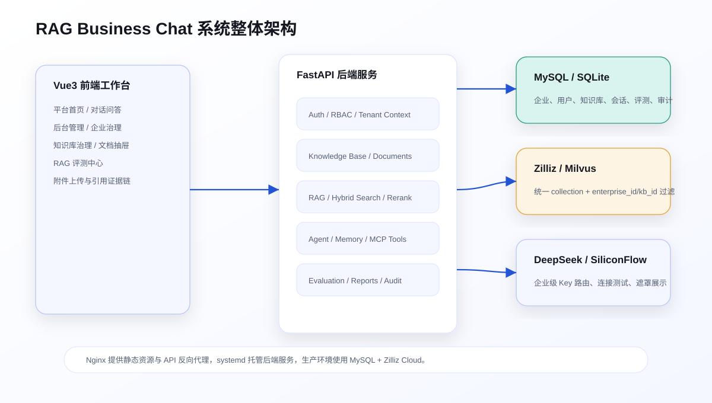
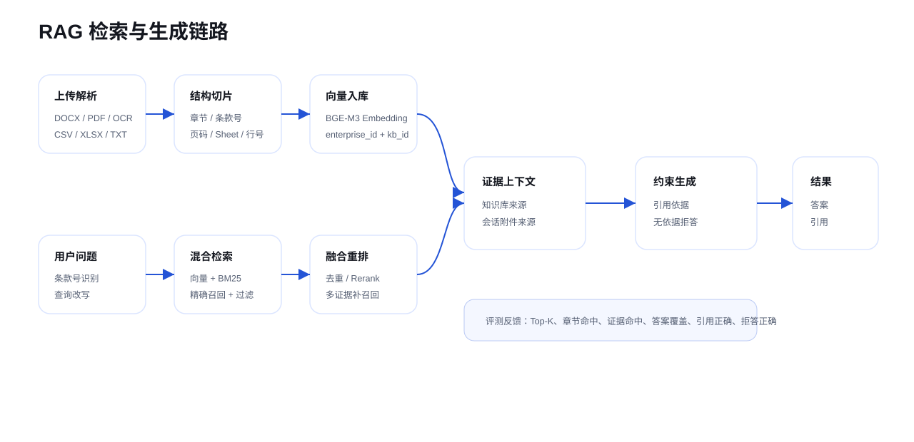
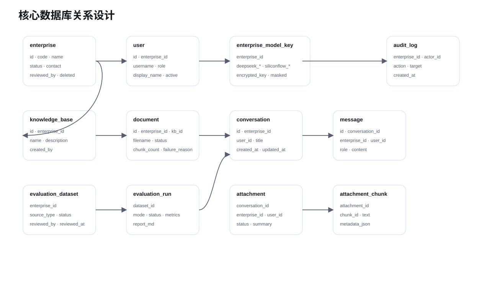
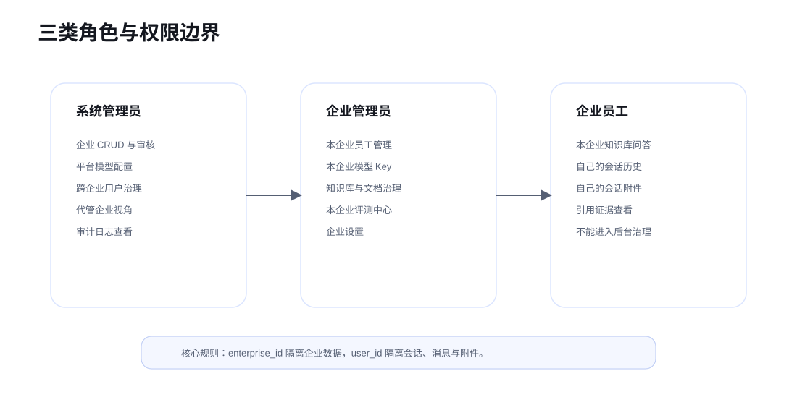
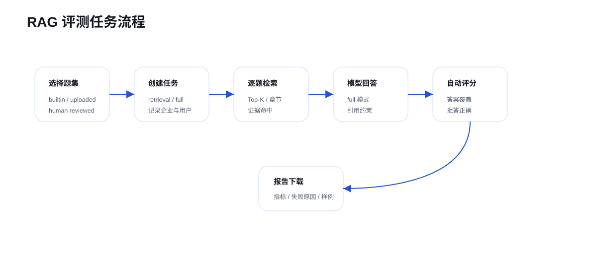
后端 Python 环境为 conda langchain1.2，前端为 Vue3 + Vite。完整步骤见仓库中的《启动说明》。
system · 用户 employee · 密码 employee123（员工）system · 用户 admin · 密码 admin123（系统管理员）DEEPSEEK_API_KEY —— 对话模型与查询改写SILICONFLOW_API_KEY —— BGE-M3 向量化与检索README 给出项目总览，机制细节拆到 docs 中，按主题阅读即可。
下面这些是读代码能核实到的真实边界，不是套话。写出来是为了让评估这套系统的人知道它的能力范围到哪里为止。
SummarizationMiddleware、PII 中间件、模型调用上限这三项挂在 _get_agent_with_memory() 上，
只有走 Agent 路径才生效。而前端实际调用的是 /api/qa/ask-stream，它直连 model.stream()，
不经过任何中间件。
.xls 实际无法解析
文档上传和会话附件的白名单都包含 .xls，但两者都把它路由到 openpyxl，
而 openpyxl 只支持 .xlsx / .xlsm。
xlrd，
要么把 .xls 从白名单里去掉、在提示里明确只支持 .xlsx。
混合检索的 BM25 通道会把整个知识库的 chunk 全部拉出来建索引（list_all_texts，上限 10000 条）。
代码注释里写的是「本项目全库仅 ~73 块，扫描成本可忽略」。
前端只用两条：/api/qa/ask-stream（流式问答）和 /api/conversations/{id}/save-turn（落库）。
/qa/ask（非流式）、/conversations/{id}/ask、/qa/agent-ask、
/qa/mcp-ask 都能调通，但没有 UI 入口。Agent RAG 与 MCP 目前是「能力已就绪、界面未接」的状态。
从企业登录、文档上传、模型配置，到带证据链的问答、会话附件与评测诊断，系统已串成一套可运行工作台。